Your Homebridge, on the wall.
A calm touch panel for the Raspberry Pi. Lights, heating, blinds, scenes and alarms – one tap away, right where you need them.
- Runs locally, no cloud
- Raspberry Pi 4 and 5
- Five languages
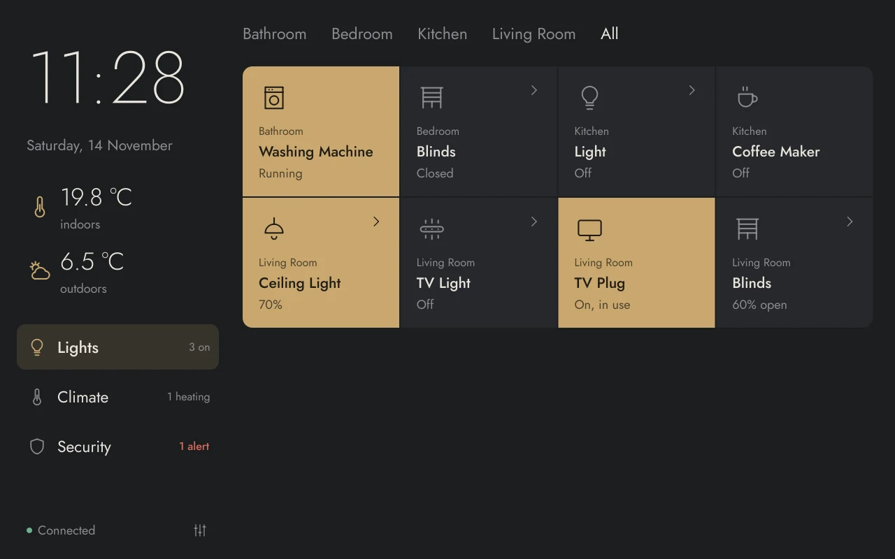
Every light, plug and blind at a glance. Tap a tile to switch it, tap the arrow for brightness and colour.
Made for a fingertip, not a mouse.
Big targets, clear states, no menus to dig through. Every accessory gets a control that feels like the real thing.
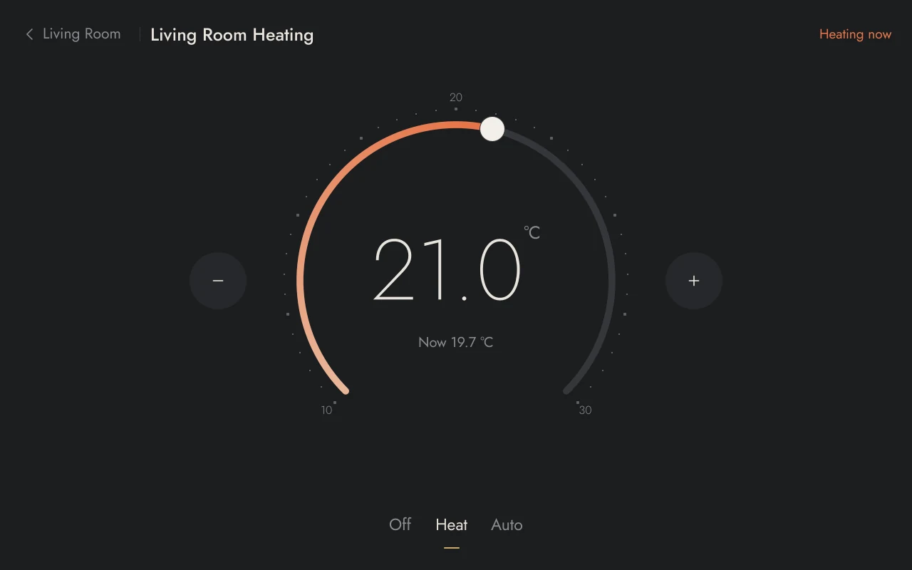
Heating with a dial
Drag the ring or tap − and +. Off, Heat and Auto are one tap apart, and the panel tells you when the room is heating.
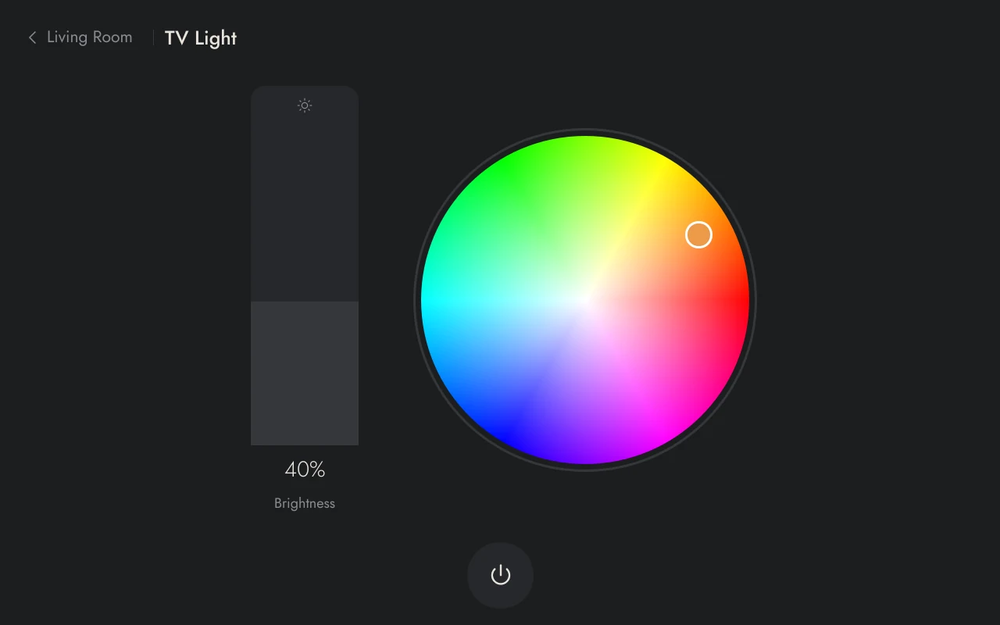
Light and colour
Brightness bar, colour wheel and white tone. Group several lamps into one tile.
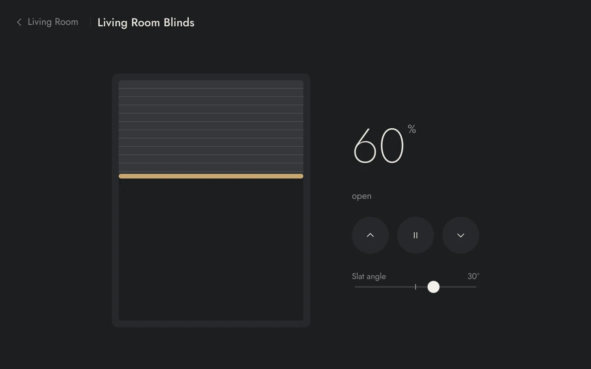
Blinds you can drag
Open, stop, close or drag to a position. Slat angle included, live while they move.
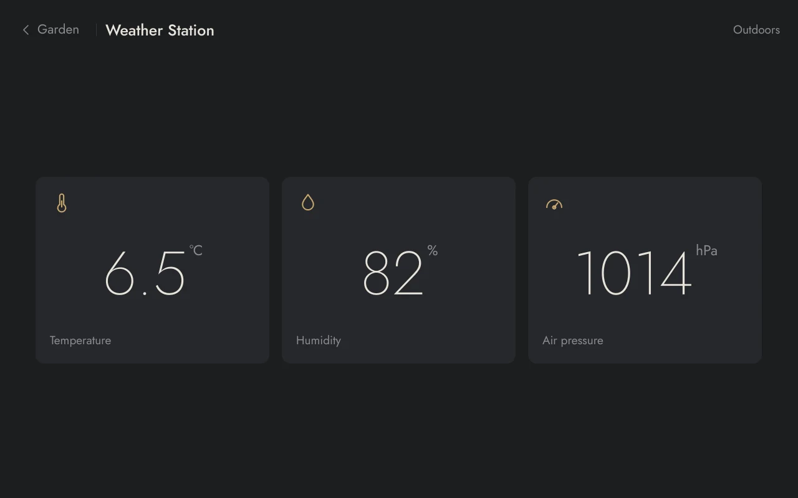
Air and climate sensors
Temperature, humidity, pressure, light, CO₂, fine dust and VOC. Bad air shows up in red.
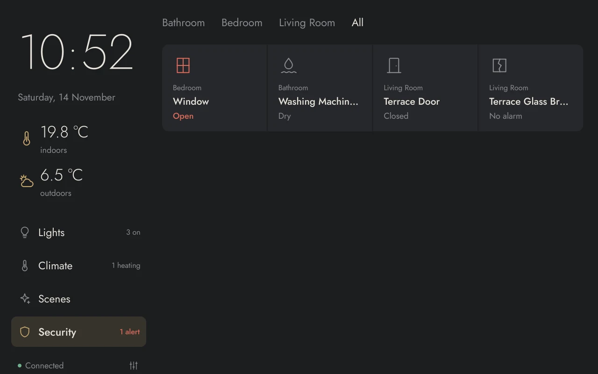
Security that speaks up
Open windows come first. A leak or broken glass wakes the panel and shows a message.
Bright by day. Dim by night.
In automatic mode the panel turns dark at 7 pm and light again at 7 am, so it never glares across a dark hallway. Drag to compare.
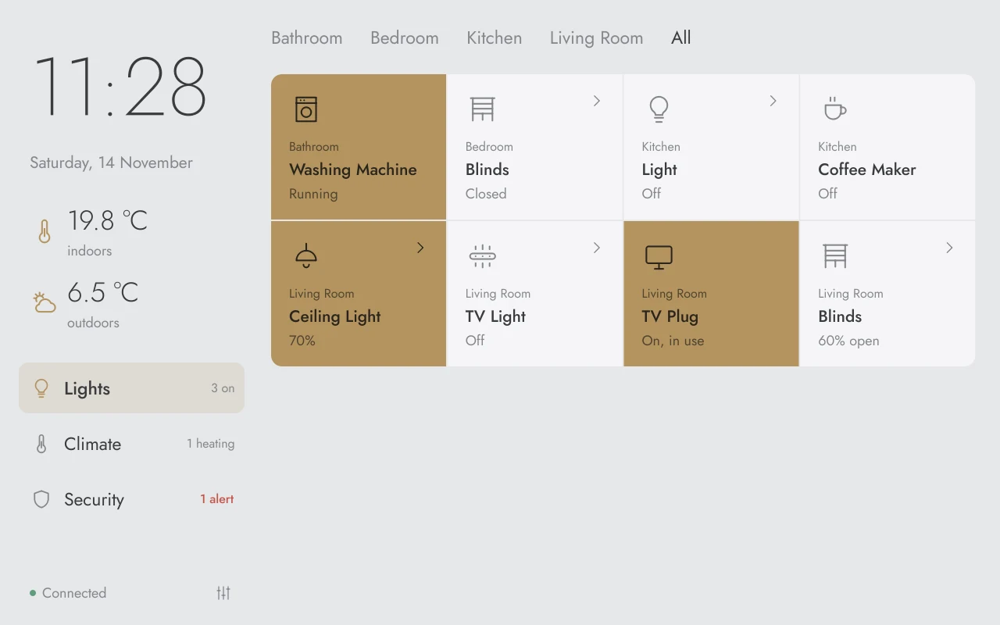
Screen saver with a clock
After one to fifteen minutes the panel fades to a large clock with indoor and outdoor temperature.
Rooms set up on the panel
Add, rename and reorder rooms, move devices and change names right on the touchscreen.
Scenes on a schedule
“Comfort” on weekdays at 06:30, “Eco” every night at 22:30 – or whatever your home needs.
One app, every screen.
From the classic Raspberry Pi Touch Display to 10.1″ panels and square wall screens. The layout adapts – sidebar, top bar or portrait.
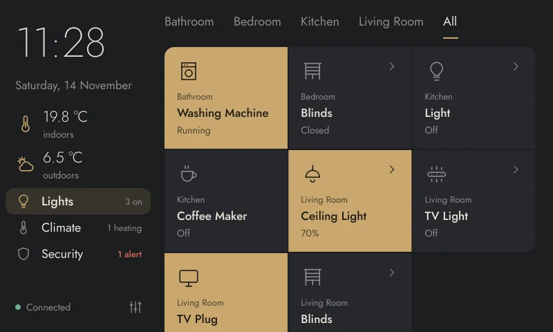
800 × 480Raspberry Pi Touch Display
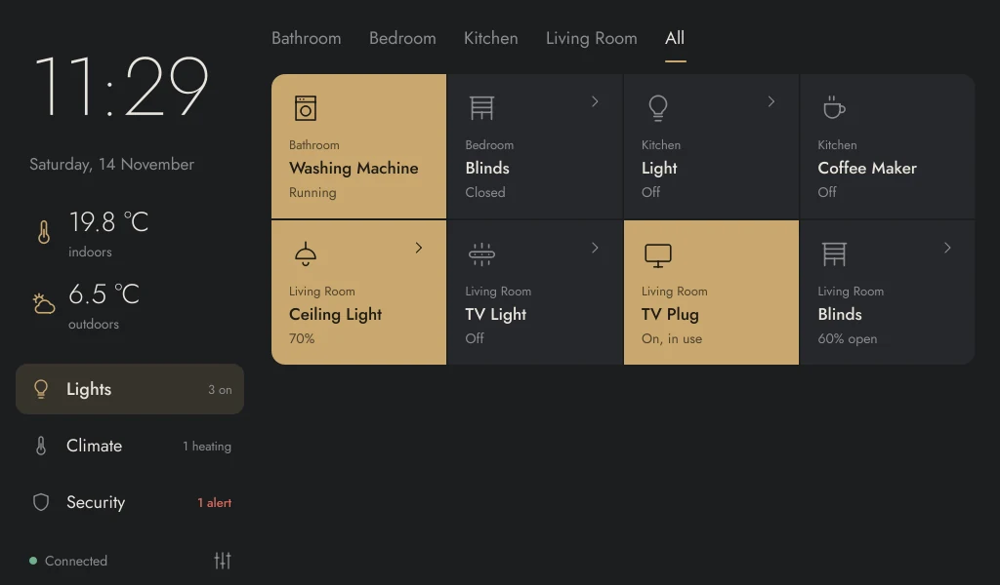
1024 × 6007″ HDMI displays
1280 × 80010.1″ panels – recommended
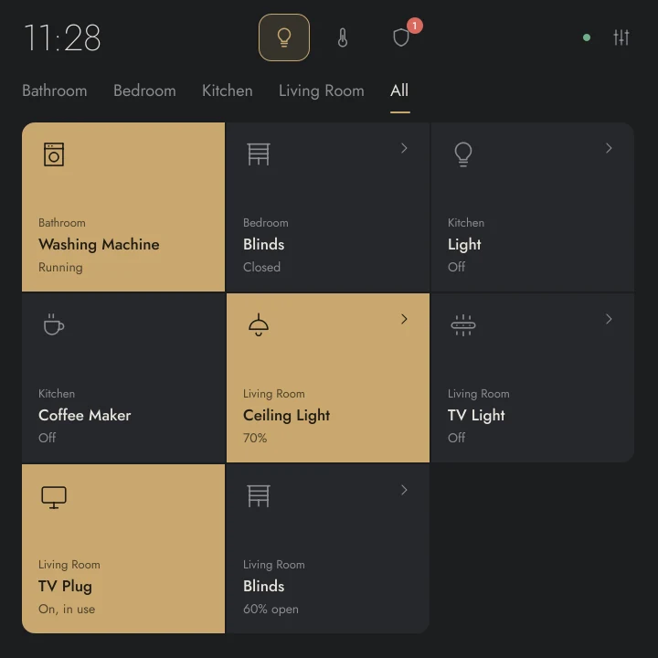
720 × 720Square – recommended
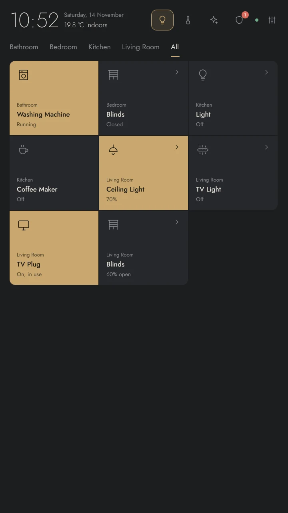
720 × 1280Portrait
Drawn to pixel scale. 1280 × 720 (Touch Display 2) works as well.
Speaks your language.
English, German, French, Italian and Spanish – switch in the settings and the whole panel follows, dates included.
Talks straight to Homebridge.
The panel speaks the HomeKit Accessory Protocol with your Homebridge over the home network. No account, no cloud, no extra server.
Your accessories
Lamps, plugs, thermostats, blinds and sensors – any brand Homebridge has a plugin for.
Homebridge
Bridges them into HomeKit. The panel connects with address, port and PIN.
Homebridge Panel
On a Raspberry Pi with a touchscreen. Optional MQTT topics appear as tiles, too.
- 0cloud services or accounts needed
- ≤ 5 suntil changes from the Home app appear on the panel
- 6screen layouts, landscape, square and portrait
- 5languages, switchable without a restart
Up and running in minutes.
One script installs everything and starts the panel in full screen after login.
Prepare Homebridge
In the Homebridge UI open Settings, turn on “Homebridge Insecure Mode” and restart Homebridge. Port and PIN are in config.json under “bridge”.
Install on the Pi
Clone the repository and run the installer. Use --eglfs instead for Pi OS Lite without a desktop.
# on the Raspberry Pi git clone https://github.com/marcjohnce/homebridge-panel ~/homebridge-panel cd ~/homebridge-panel ./deploy/install.sh --autostartConnect
Tap the settings icon, enter address, port and PIN, tap “Test connection” and then “Apply”. No restart needed.
Questions, answered.
Why does Homebridge need insecure mode?
The panel reads and controls accessories through Homebridge's HAP interface, which requires insecure mode. Keep in mind that anyone on your home network who knows the PIN can then reach Homebridge – use it on a network you trust.
Can I use HomeKit devices without Homebridge?
Not directly. Native HomeKit devices such as Eve need encrypted pairing, which the panel doesn't include. Add them to Homebridge with a plugin and they show up on the panel.
What if I change something in the Home app?
The panel picks it up within five seconds. Your own taps on the panel take effect immediately.
Can I try it without hardware?
Yes. Start it with python -m app --demo on any Linux machine to get simulated devices in a window.
Does it run on older Raspberry Pis?
A Pi 3 works. On very old models without OpenGL ES 3, set QT_QUICK_BACKEND=software before starting.
Lights out. From the wall.
Free to download. Built with Qt Quick and Python.